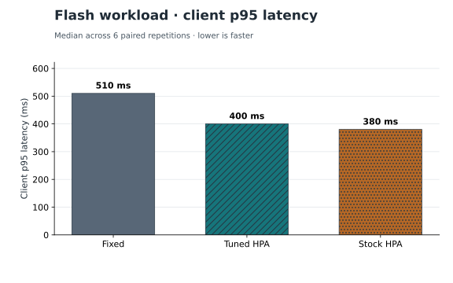
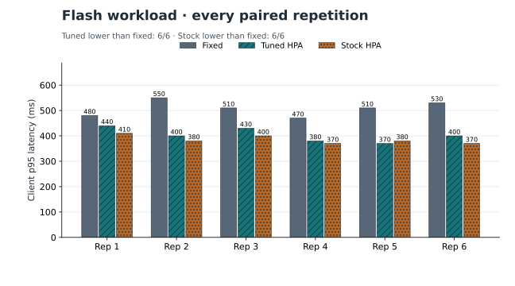
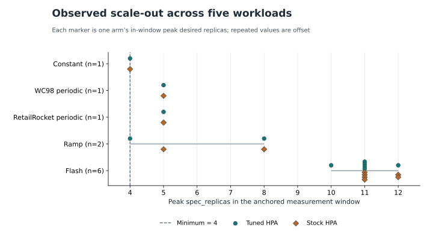
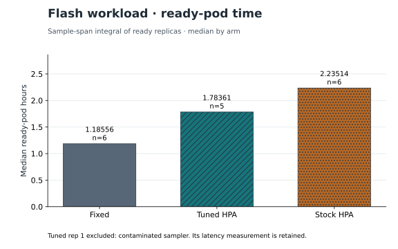
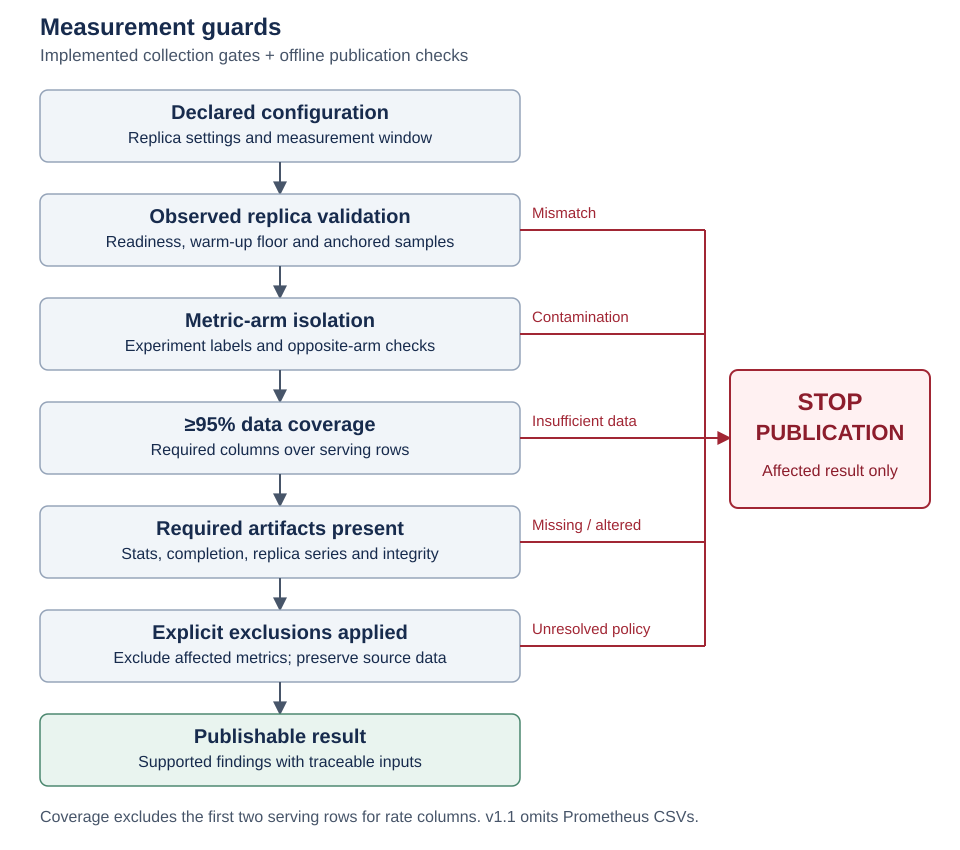
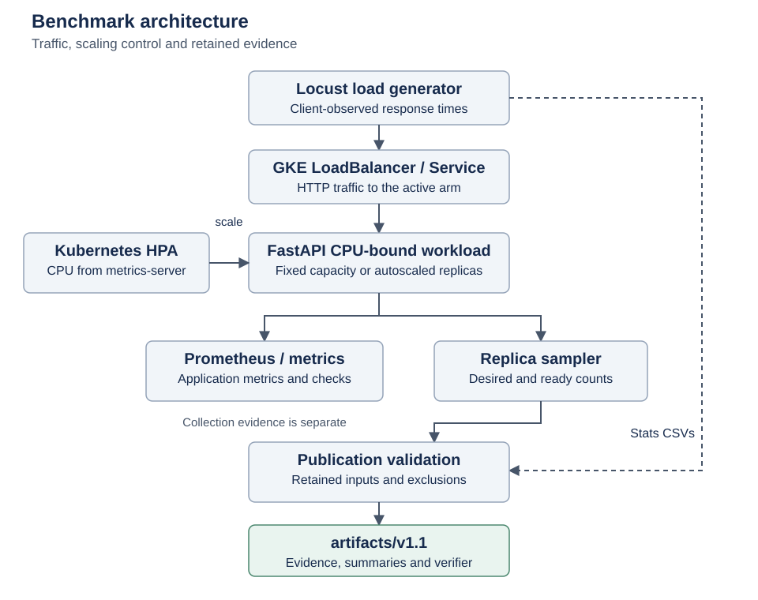

Kubernetes performance engineering / A case study by Sriram Madduri
When does Kubernetes autoscaling actually help?
A controlled Google Kubernetes Engine experiment comparing fixed capacity, stock Kubernetes Horizontal Pod Autoscaling, and tuned HPA using workloads derived from real HTTP traffic and e-commerce events.
Kubernetes can add application replicas when demand rises. Here, autoscaling improved flash tail latency with more ready-pod time. Verifying an earlier result also exposed a flawed baseline—and changed how I measured success.
Flash workload Current evidence · 6 paired repetitions
- Median p95 latency
- 510 → 400 ms
- Fixed → tuned HPA
- Paired flash runs
- 6 / 6
- Tuned HPA beat fixed
- Median ready-pod time
- +50.4%
- Tuned vs fixed · ratio of medians
n=5 tuned; n=6 fixed - Peak HPA replicas
- 10–12
- Observed across both HPA policies
Declared floor: 4
01 / The latency result
Autoscaling helped when
traffic spiked sharply.
During flash traffic, both HPA policies lowered tail latency relative to fixed capacity.
The median client p95 was 510 ms with fixed capacity, 400 ms with tuned HPA, and 380 ms with stock HPA.
What is p95? The response-time threshold at the 95th percentile. It captures the slower end of the request experience. Here, each arm has a p95 per run; the headline is the median across runs.
Lower is faster. These are client measurements from the same flash envelope, across 6 paired repetitions.


The result held across the paired runs.
Tuned HPA beat fixed in 6/6 repetitions; stock HPA beat fixed in 6/6. The exact paired Wilcoxon tests gave p = 0.03125 for tuned vs fixed and p = 0.03125 for stock vs fixed.


A quick mental model
More cooks,
when orders pile up.
Imagine a restaurant opening dinner service with 4 cooks. A steady stream of orders may never justify adding staff. A sudden crowd can overwhelm that team, so more cooks are called in.
Kubernetes HPA works similarly. It watches resource pressure and adjusts the number of application replicas. In this experiment, it responds to CPU utilization relative to the CPU each replica requests.
- Minimum replicas
- 4
- Maximum replicas
- 12
- CPU target
- 60%
Declared experiment settings. Adding a replica is not instantaneous; this case study does not publish a cold-start distribution.
02 / The shape of demand
Different traffic.
Different scaling response.
Flash produced the strongest scale-out in these experiments. The quieter workloads provide context, with fewer retained repetitions.
| Workload | Peak replicas | n |
|---|---|---|
| Constant WorldCup98 | 4 | 1 |
| Periodic WorldCup98 | 5 | 1 |
| Periodic RetailRocket | 5 | 1 |
| Ramp WorldCup98 | 4–8 | 2 |
| Flash WorldCup98 | 10–12 | 6 |
n = paired repetitions per workload. Peaks use in-window spec_replicas (desired count), not ready count. The fixed arm’s peak was 4 throughout.


The shape of demand changed how much HPA reacted, but these observations do not isolate a single cause. Ramp varied across retained repetitions. Request volume or peak-to-mean ratio alone is not an established explanation, and the small non-flash samples do not support a general workload ranking.
03 / The resource tradeoff
Faster responses used
more ready-pod time.
Tuned HPA improved flash latency while using about 50.4% more median ready-pod time than fixed capacity. Stock HPA used about 88.5% more.
Ready-pod time adds up how many replicas were ready, and for how long, over the sampled span. It measures available application capacity over time. It is not cloud billing or CPU consumption.
- Fixed · n=6
- 1.18556 pod-hours
- Tuned HPA · n=5
- 1.78361 pod-hours
- Stock HPA · n=6
- 2.23514 pod-hours


04 / The failure that changed the project
The first result was wrong.
Withdrawn result
“Failure rate fell from51.7% to 0.97%.”
This was the original claim. It is invalid and is not a current result.
The supposedly multi-replica fixed baseline had actually run with one replica.
Verification showed that the benchmark had not tested the capacity it claimed to test. That invalidated the comparison. I withdrew the claim and rebuilt the project around measurement validation.
Current verified result
The flash latency and ready-pod-time findings above use a separate evidence package, an explicit exclusion policy, and an offline verifier.
05 / Trust the measurement first
An unfair comparison
should fail publication.
An impressive number is useless if the baseline is wrong or the evidence is incomplete.
The measurement path checks specific assertions before a result can be used:
- Configured vs observed replicas. Validate the declared starting state and the in-window replica observations.
- Per-arm metric isolation. Reject traffic contamination from the other arm.
- At least 95% data coverage. Enforce required-column coverage over serving rows.
- Required artifacts. Require measured stats and shape completion; check integrity.
- Explicit exclusions. Withhold affected metrics while preserving the original evidence.


06 / Inside the experiment
One application.
Three capacity policies.
A traffic generator sends requests through a Kubernetes service to application replicas. The autoscaler adjusts capacity; the measurement system records what happened.
The request path
Locust → GKE service → FastAPI replicas. A CPU-bound application receives the same selected workload envelope under fixed, tuned HPA, and stock HPA policies.
The control and evidence paths
Kubernetes HPA uses metrics-server CPU to adjust replicas. Prometheus collects application metrics. A separate sampler records desired and ready replica counts.
Python verification and publication tooling checks the retained Locust and replica evidence, applies exclusions, and produces the canonical summaries and figures.
The public bundle retains client and replica evidence. Prometheus belongs to the collection architecture, but its raw CSVs are not in this package.
Explore the configuration and limitations

07 / Workloads with a lineage
Real traces, carefully translated.
World Cup 1998
Web-server access logs from a global event. The source contains approximately 1.35 billion HTTP requests; this experiment uses selected aggregate windows, not the entire dataset.
M. Arlitt and T. Jin, “1998 World Cup Web Site Access Logs,” August 1998. Internet Traffic Archive source.
RetailRocket
E-commerce event data provides another pattern of demand. Selected event counts become a periodic workload envelope after the documented filtering and aggregation.
RetailRocket, published by Roman Zykov on Kaggle. Derived material retains CC BY-NC-SA 4.0. Source attribution and terms.
- Source traces
- Candidate windows
- Predefined scoring rule
- Selected envelopes
- Locust shapes
The versioned selection rule was committed before candidate scoring under that rule. Locust reproduces workload envelopes, not the original request-arrival process. SHAPE_MEAN_USERS=69 is a model-derived calibration parameter, not measured maximum capacity.
08 / Inspect the evidence
You can check the result
without a cloud account.
The ~1.8 MiB public evidence package includes raw retained measurements, explicit exclusions, checksums, canonical summaries, and an offline verifier. No cluster or source-dataset download is needed to verify the published findings.
Start with the verifier.
From a repository checkout, use the repository’s Python virtual environment. The evidence package also works on its own with standard-library Python.
The command recomputes the findings and rejects mismatched summaries or altered inputs. It writes nothing by default.
# From the repository root
".venv/bin/python" artifacts/v1.1/verify.py
# Standalone package, standard-library Python
python artifacts/v1.1/verify.pySelected output lines from a successful verification
PASS flash p95 ms: fixed=510 tuned=400 stock=380; n=6 PASS exact Wilcoxon: 0.031250, 0.031250, 0.093750
09 / For engineers
The details behind
the headline.
These findings apply to the retained experiment. The evidence is inspectable; the limits remain explicit.
Three arms and declared configuration
Fixed capacity uses 4 replicas. Both HPA arms declare a minimum of 4, a maximum of 12, and a CPU target of 60% of requested CPU. Stock HPA uses Kubernetes behavior defaults; tuned HPA sets explicit scale-up policies and a 60-second scale-down stabilization window.
Tuned manifest · Stock manifest · Declared run metadata
Complete per-arm deployed configuration snapshots were not retained; the declarations are not a complete deployment attestation.
Latency definition and exact paired tests
Client p95 comes from Locust’s Aggregated row, including failures and the mixed request population. The headline takes the median across repetitions; it is not a pooled percentile.
The exact two-sided Wilcoxon signed-rank test uses midranks for tied absolute differences and removes zero differences. Fixed vs tuned: p = 0.03125. Fixed vs stock: p = 0.03125. Tuned vs stock: p = 0.09375. Tests are unadjusted.
Inspect the paired statistical testsMetric-specific sample sizes and integration
Latency uses 6 paired flash repetitions. Ready-pod time uses n=6 fixed, n=5 tuned, and n=6 stock. Tuned flash rep-1’s replica series extends outside its arm; its ready-pod time is excluded while latency remains.
Integration uses the left sample’s ready count until the next sample, over the retained span, with no extrapolation. Replica peaks use the anchored in-window samples. Ratios of unrounded medians are +50.445173% tuned/fixed and +88.530928% stock/fixed.
Read executable exclusionsFixed arm order, small samples, deployment variability
Runner order was tuned, stock, fixed; it was not randomized. Flash has n=6, ramp n=2, and the other workloads n=1 each. The originally planned non-flash repetition scope was not completed.
Ramp scale-out varied between runs. Paired hardware inventories and warm-up CPU comparisons are MISSING; the evidence does not establish a hardware cause. Only one calibration sweep is retained, so calibration repeatability is not demonstrated.
What this package cannot establish
Omitted Prometheus raw evidence prevents offline verification of historical coverage and arm isolation. This publication establishes no CPU-utilization headline, SLO compliance series, billing result, or usable Phase 5 cold-start distribution. Historical cold-start claims remain withdrawn or unavailable.
Checksums establish consistency within the package, not independent attestation of how collection occurred. Full source-trace candidate scoring requires the original datasets; the package verifies the selected workload windows.
Read all measurement limitationsThe engineering process
From a claim to a checkable result.
- Initial benchmarkA failure-rate claim was published.
- Baseline invalidatedObserved capacity contradicted the declaration.
- Measurement rebuiltReplica checks, isolation, and artifact gates.
- Real-trace workloadsVersioned selection and documented provenance.
- Repeated experimentsPhase 5 paired runs with explicit limitations.
- Public verificationRetained inputs, exclusions, and an offline verifier.